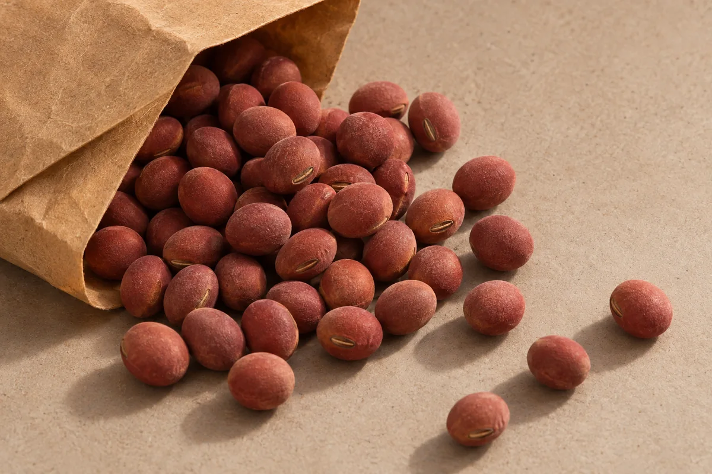

Carbono Circular
Destinação de resíduos
Quando sobra um lote de sementes tratadas, a sementeira precisa identificar quem pode recebê-lo e como documentar o destino. O estudo parte da origem e do tratamento daquele lote.
O que entra na análise
- Identificação do lote e dos produtos aplicados às sementes.
- Condições de recebimento em cada rota considerada.
- Documentação necessária para acompanhar o encaminhamento.